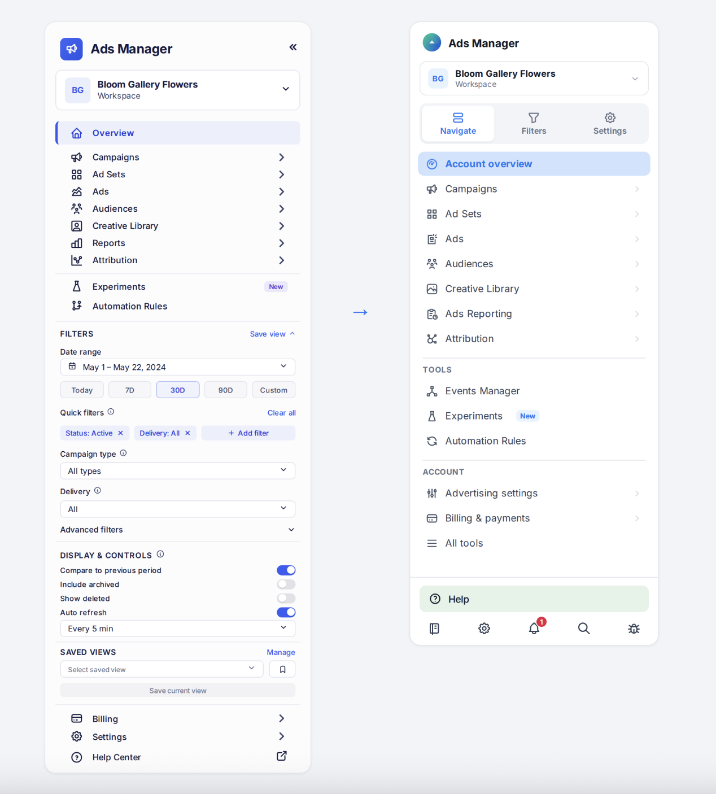
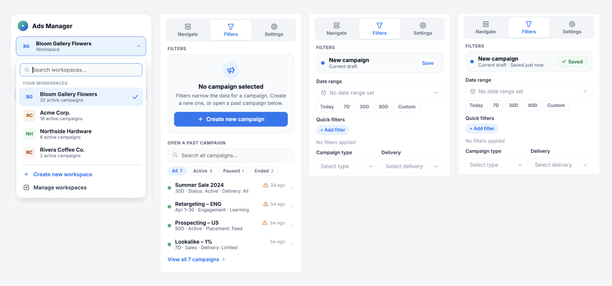
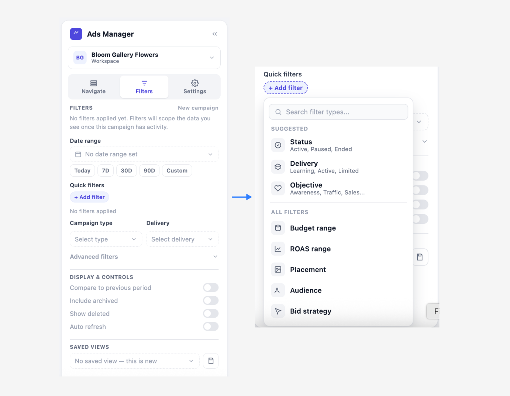

<!DOCTYPE html>
<html></html>
    <head>
        <meta charset="utf-8">
        <meta http-equiv="X-UA-Compatible" content="IE=edge">
        <meta name="viewport" content="width=device-width"/>
        <title>Peter An-Designer</title>
        <link rel="stylesheet" href="infra.css">
        <link rel="stylesheet" href="../owl-carousel/owl.carousel.css">
        <link rel="stylesheet" href="../owl-carousel/owl.theme.css">
    </head>

    <body>
            <header class="head">
           <a href="../index.html"><h5>pete rivers-an • design + product</h5></a>
            <!-- <h5 class="end"><a href="archive.html">Archive</a></h5> -->
        </header>

        <div class="container">
        <div id="owl-demo" class="owl-carousel owl-theme">
            <div class="item"></div>
           
<!--
            <div class="item">
            </div>
-->

</div>

            <div class="text">
        <div class="descript">
            <p><b>PROJECT OVERVIEW:</b> Meta's internal ads management tools support high-frequency, high-stakes workflows for the teams who build and monitor advertising campaigns at scale. As the tool grew, navigation, filters, and account-level settings all competed for the same sidebar space, making it harder for people to tell what they were looking at, let alone act on it quickly. I led a redesign of the core navigation and configuration experience, moving from a single dense sidebar to a structured, tab-based system that separates where you're working, what you're viewing, and how the tool behaves — while keeping every control a power user relies on just as reachable as before.</p>
            <div class="protos">
    <p><b>TRY ME:</b> I built 3 key user journeys as clickable prototypes :) Please check it out. *The data is sample data.</p>
    <ul>
        <li><a href="prototypes/flow-1-reopen-campaign.html" target="_blank" rel="noopener">Flow 1 &rarr; Reopen a past campaign</a></li>
        <li><a href="prototypes/flow-2-new-campaign.html" target="_blank" rel="noopener">Flow 2 &rarr; Start a new campaign</a></li>
        <li><a href="prototypes/flow-3-change-setting.html" target="_blank" rel="noopener">Flow 3 &rarr; Change a setting</a></li>
    </ul>
</div>
        </div>
        <div class="info">
        <p><span>Project Name : META Ads Infra Side Bar</span></p>
             <p><span>Type : Infra UX & Product Design</span></p>
             <p><span>Tools Used : Figma, Figjam, Miro</span></p>
            </div>
        </div>

<section class="">
    
<div>
    <h2>Problem</h2>
    <p>Three types of controls — navigation, filters, and persistent settings — lived in the same scrolling sidebar, with no visual system to tell them apart:
        <div>
        <ul>• High information density made it hard to scan for the one control you needed.</ul>
        <ul>• Navigation and filtering had no clear separation, so switching where you were working and what you were viewing felt like the same action.</ul>
        <ul>• Temporary filters and persistent settings looked and behaved similarly, so it wasn't obvious whether a change affected only your current view or your account going forward.</ul>
        </div>

    </p>
</div>
<div>
    <h2>Observations</h2>
    <p>Internal users perform the same handful of tasks dozens of times a day, so speed and predictability mattered more than minimizing clicks in the abstract. Rather than nesting everything behind menus, I organized the tool around three questions:

Instead, I organized the experience around three questions:

<ul>• Navigate — Where am I working?</ul>
<ul>• Filter — What information do I need right now?</ul>
<ul>• Configure — How should the tool behave by default?</ul>

This became the basis for a persistent three-way tab switcher — Navigate, Filters, Settings — that replaced the old single scrolling list.</p>
</div>
<div class="body-img">

</div>

<div>
    <h2>Tasks & Actions</h2>
    <p>
        <h4>01. Split the sidebar into a tab system instead of one long list</h4>


Rather than stacking navigation, filters, and settings vertically (which forced scrolling as the tool grew), I moved to a segmented tab switcher at the top of the sidebar. Each tab owns a fixed-height panel, so the sidebar never grows past the viewport regardless of how many filters or settings exist underneath — a structural fix for the density problem, not just a visual one.

<div class="body-img">

</div>


<h4>02. Design a focused, scalable filtering experience</h4>

The Filters tab prioritizes what people reach for most: date range with quick presets, campaign type, and delivery. A "+ Add filter" control opens a searchable picker split into Suggested filters (Status, Delivery, Objective) and the full filter catalog (Budget range, ROAS range, Placement, Audience, Bid strategy) — so adding a new filter type to the product later never means redesigning the sidebar, only adding one row to a list. Selected filters surface as removable chips directly under Quick Filters, making active state visible without opening anything.


<div class="body-img">

</div>


<h4>03. Give the filtering experience a real empty state</h4>

For a brand-new campaign with no data yet, the Filters tab makes "nothing is configured" explicit rather than showing the same UI with blank values. Dashed borders on unset fields, muted placeholder copy ("No date range set," "Select type"), and a short inline explanation ("Filters will scope the data you see once this campaign has activity") keep the screen legible instead of looking broken.

<div class="body-img">

</div>


<h4>04. Make workspace switching and management distinct actions</h4>

<p>Switching context between workspaces and managing them are different tasks with different stakes, so I designed them as two separate surfaces. The workspace switcher is a lightweight dropdown for quick context changes — searchable, with each workspace showing a live stat (active campaign count) and the current one checked. "Manage workspaces" opens a full page with role, member count, and creation date per workspace, since renaming, auditing access, or transferring ownership are deliberate actions that deserve their own space rather than living inside a quick-switch menu.
</p>


</div>


<div class="bottom">
    <h2>Outcome</h2>
    <p>The redesigned system creates a clear interaction model — Navigate → Filter → Configure — where every control lives exactly where its purpose suggests it should. Power users retain full access to the depth an infrastructure tool requires, but nothing competes for attention with something unrelated to it. The tab structure, searchable filter/settings pickers, and dedicated workspace management page also make the system scalable by design: new filters, new settings, and new workspaces can all be added without the sidebar itself growing denser or requiring a redesign.</p>
</div>
</section>


    </div>
    


    <!-- <footer>
          <h5 class="footer-links"><a href="https://medium.com/@peetparkaa" class="foot-1">scripts</a></h5>
        </footer> -->

    <script src="https://ajax.googleapis.com/ajax/libs/jquery/1.12.0/jquery.min.js">
</script>
<script src="../owl-carousel/owl.carousel.js"></script>

<script>
    $(document).ready(function() {
  $("#owl-demo").owlCarousel({

      navigation : true, // Show next and prev buttons
      slideSpeed : 300,
      paginationSpeed : 400,
      singleItem:true
  });
});
    </script>
    </body>
</html>
